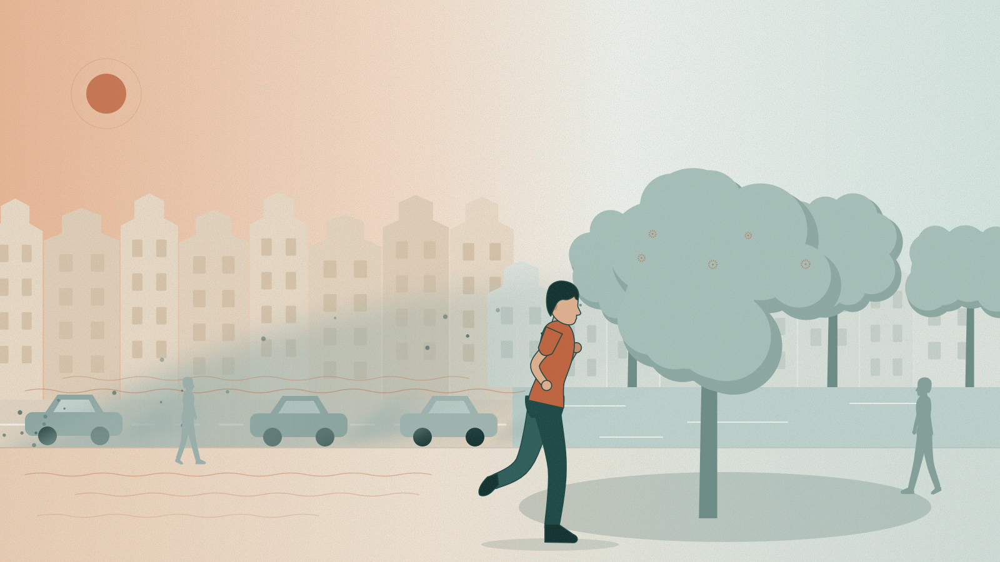
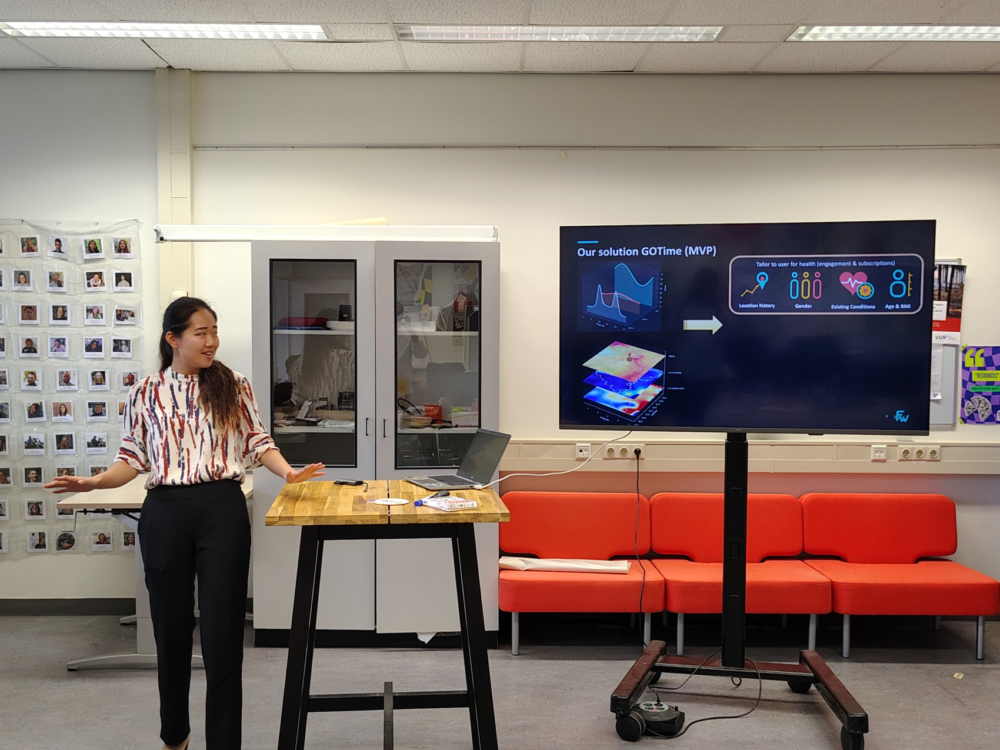

FerryWellCo · Our work
Heat and air pollution can make outdoor activity harder on the body
Heat can strain the heart. During exertion, we breathe more air, including pollutants. Yet a temperature and an air-quality reading still leave someone to work out what those conditions mean for the activity they have planned. We started FerryWellCo to help wellness platforms make that choice clearer.
Why this matters
Run at 15:20 or wait until later?
The person planning that run can see the temperature and an air-quality reading. Neither tells them how the conditions for their plan compare with another time.
GOTime is our first product concept. In a sample wellness app, it places the planned run beside another available window and shows the difference first. The conditions sit underneath for anyone who wants to see why.

GOTime · Our first product concept
The same run at two different times
Our interactive example starts with a 45-minute run. Inside a fictional wellness app, it shows how heat and air-quality estimates for the planned time compare with another available window.
Our approach
We start with the activity someone has planned
A useful answer depends on where that activity happens and when. We bring environmental research and spatial data into the planning moment, so a platform can show the comparison alongside the plan.
The research
Why heat and air pollution matter during activity
Heat can place strain on the heart, while physical activity increases the amount of air a person breathes. Air pollution includes particles and gases; PM2.5 is one example alongside nitrogen dioxide and ground-level ozone. Pollen is another outdoor condition we are considering. Our work starts with this evidence, then asks what a person needs to know for the activity ahead.
Read about the science ↗The people behind the work
Why we started FerryWellCo
Our team began with research into air pollution, heat and cardiovascular health. We wanted that knowledge to reach the decisions people make in everyday life. GOTime is our first attempt to bring it into an outdoor plan.

Another setting we are exploring
We are also exploring outdoor work
Teams planning outdoor work also face decisions about heat and air quality. We are speaking with organisations to understand where environmental intelligence could help them plan.
Tell us about your work ↗Contact
Tell us where people plan activity in your app
If you build a wellness platform, we would like to hear where people plan activity in your product. We also welcome questions about outdoor work, the research and the demo.